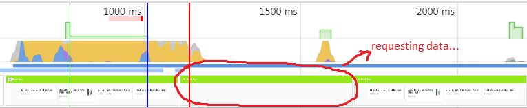

Angular Universal
Mai 2018 State
Why Angular Universal?
- Performance / User Experience
- Search Engine Optimization / Social Media Crawlers
Let's start

Add an Universal bundle
ng generate universal ssr-appIt creates a new app which:
- shares sources with the existing one
- has a different entry point:
main.server.ts - uses a separate TypeScript configuration file:
tsconfig.server.json - outputs its build to the
dist-serverfolder
Build the Universal bundle
npm installinstalls @angular/platform-server
ng build --prod --app=ssr-app --output-hashing=falsebuilds the Universal bundle outputting it to the dist-server folder
we set --output-hashing=false as we won't benefit from the build hashes in file names on the server
Add a convenience script to package.json
"scripts": {
"build:server-app": "ng build --prod --app=ssr-app --output-hashing=false"
}
which can then be run like this:
npm run build:server-appAdd a convenience script to package.json
"scripts": {
"build:server-app": "ng build --prod --app=ssr-app --output-hashing=false"
}
which can then be run like this:
npm run build:server-appPre-rendering the /home route (1)
Create an npm script named prerender.ts in the prerender folder:
import 'zone.js/dist/zone-node';
import {renderModuleFactory} from '@angular/platform-server';
import {writeFileSync} from 'fs';
const {AppServerModuleNgFactory} = require('../dist-server/main.bundle');
renderModuleFactory(AppServerModuleNgFactory, {
document: 'Pre-rendering the /home route (2)
Run the script (Windows):
node_modules\.bin\ts-node prerender\prerender.tsOpen the prerender\prerender.html in your browser
Add a pre-render script to package.json for convenience:
"scripts": {
"prerender": "./node_modules/.bin/ts-node ./prerender/prerender.ts"
}
Pre-rendering the /books route (1)
Change the url to /books in prerender.ts and run pre-rendering:
npm run prerenderOpen the prerender\prerender.html in your browser. No books have been rendered!
Pre-rendering the /books route (2)
There are two problems: the /api/book endpoint is not available while pre-rendering (1) and this bug (2).
(1) can easily be solved starting the server:
npm run serverA workaround for (2) is to use an absolute instead of relative URL in the BookService while pre-rendering.
Pre-rendering the /books route (3)
We make use of the isPlatformServer function and the PLATFORM_ID token:
import {Inject, Injectable, PLATFORM_ID} from '@angular/core';
import {Observable} from 'rxjs/Observable';
import {Book} from './book';
import {HttpClient} from '@angular/common/http';
import {isPlatformServer} from '@angular/common';
@Injectable()
export class BookService {
private static BOOK_URI = 'api/book';
constructor(private http: HttpClient,
@Inject(PLATFORM_ID) private platformId) {
}
findAll(): Observable<Book> {
const hostName = isPlatformServer(this.platformId) ?
'http://localhost:9000/' : '';
return this.http.get<Book>(hostName + BookService.BOOK_URI);
}
}
So we've reached the state
on the 1-prerender branch...
Server Side Rendering
- We'll use the existing Express (Node.js) app (
server/server.ts) which serves the/api/bookendpoint. - We will now pre-render a given route upon the 1st (synchronous) server call.
- In
prerender.tswe passed<app-root></app-root>torenderModuleFactory(). Now we'll pass theindex.htmlcontent of the regular frontend app:npm run build
server/server.ts
import 'zone.js/dist/zone-node';
import * as express from 'express';
import {readFileSync} from 'fs';
import {enableProdMode} from '@angular/core';
import {renderModuleFactory} from '@angular/platform-server';
const {AppServerModuleNgFactory} = require('../dist-server/main.bundle');
enableProdMode();
const app = express();
app.get('/api/book', (req, res) => {
const books = readFileSync(__dirname + '/books.json', 'utf-8').toString();
res.json(JSON.parse(books));
}
);
const indexHtml = readFileSync(__dirname + '/../dist/index.html', 'utf-8').toString();
// serve js, css, ico, etc. files required by /../dist/index.html
app.get('*.*', express.static(__dirname + '/../dist', {
maxAge: '1y'
}));
// pre-render the content of the requested route
app.route('*').get((req, res) => {
renderModuleFactory(AppServerModuleNgFactory, {
document: indexHtml,
url: req.url
})
.then(html => {
res.status(200).send(html);
})
.catch(err => {
console.log(err);
res.sendStatus(500);
});
});
app.listen(9000, () => {
console.log('Server listening on port 9000!');
});
It looks (almost) perfect... :)
For details please refer to this Angular Material Github issue
So we've reached the state
on the 2-ssr branch...
There's one problem, though...
The data from the /api/book endpoint is requested twice: while pre-rendering on the server (1) and from the browser after the app gets bootstrapped (2):
Apart from the unnecessary server hit, this leads to bad user experience:
The State Transfer API (1)
import {Component, Inject, OnInit, PLATFORM_ID} from '@angular/core';
import {BookService} from '../book.service';
import {makeStateKey, TransferState} from '@angular/platform-browser';
import {Book} from '../book';
import {of as observableOf} from 'rxjs/observable/of';
import {tap} from 'rxjs/operators';
import {isPlatformServer} from '@angular/common';
@Component({
selector: 'app-book-overview',
templateUrl: './book-overview.component.html',
styleUrls: ['./book-overview.component.scss']
})
export class BookOverviewComponent implements OnInit {
books$;
constructor(private book: BookService, private transferState: TransferState, @Inject(PLATFORM_ID) private platformId) {
}
ngOnInit() {
const BOOKS_KEY = makeStateKey<Book[]>('books');
if (this.transferState.hasKey(BOOKS_KEY)) {
const books = this.transferState.get<Book[]>(BOOKS_KEY, []);
this.transferState.remove(BOOKS_KEY);
this.books$ = observableOf(books);
} else {
this.books$ = this.book.findAll().pipe(
tap(books => {
if (isPlatformServer(this.platformId)) {
this.transferState.set(BOOKS_KEY, books);
}
})
);
}
}
}
The State Transfer API (2)
To get the code working both the client and the Universal app have to import specific modules: BrowserTransferStateModule and ServerTransferStateModule respectively.
While rendering on the server the books' data is put for transferring to the client. It then gets this data instead of requesting the server.
It looks better now...
So we've reached the state
on the 3-state-transfer branch...
Making the app SEO friendly
We'll update the <title> and <meta name="description"> elements specifically to routes.
import {Component} from '@angular/core';
import {Meta, Title} from '@angular/platform-browser';
@Component({
selector: 'app-home',
templateUrl: './home.component.html',
styleUrls: ['./home.component.scss']
})
export class HomeComponent {
constructor(private title: Title, private meta: Meta) {
this.title.setTitle('Welcome to the Book App');
this.meta.updateTag({name: 'description',
content: 'Welcome to the library'});
}
}
Social media crawlers
Social media crawlers can understand the Open Graph protocol, e.g <meta property="og:title" content="Books..." >
As in previous example we can make use of the Meta service to do this.